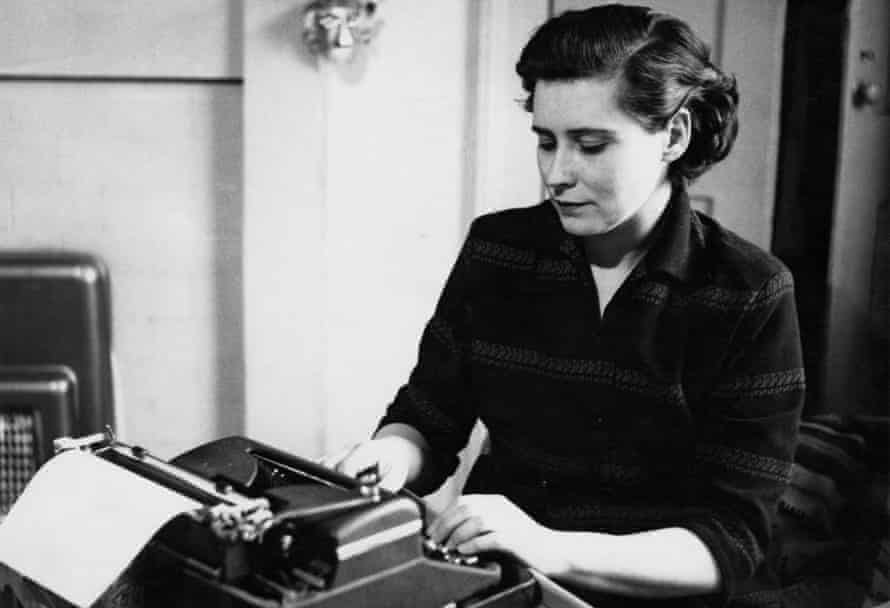

What better advice for writers other than this


While Writing this book inspired and started from this article, I have made a short break after an hour of writing, for some piece of …. coffee and a cup of pasta with butter, I remembered a friend and brother to whom I advised to write as he is willing to be a successful writer what I think he is already because he has already published a book which I think is also a successful book, bestselling, I don't know because I don’t know anything about this book financially but I hope bestselling it is. I was willing to tell him to just write and to not care about how successful his published book will be because the job of a writer is just to write then what other good advice to give to a writer other than telling him or her to write.
We often attach ourselves to the outcomes whereas it is the practice that matters most. We should agree that we have no idea about the outcomes but we have clearly a means and power to practice whatever we think can help get to this outcome that we seek. If a successful bestselling book is the goal of the writer then always writing is the practice to adopt.
I have no idea what the outcome is but I have comitted at some point in time to write and publish daily in medium as a practice and up until now that’s what I am doing and this practice started amazing data-driven book projects that are on their ways of being published and some of them are almost ready like these business models and platforms that I have spent years ideating about are. Those business models and platforms couldn’t have been more successful without books whose reading has really fuelled their ideation process until motivating me to first act into the book publishing industry before any other industry because BOOKS MATTER.
I am not a writer but if I could and would give advice to a writer here is again the advice I would give to him, to her, and to every one of US
WRITE!